WordPressでの作り方
WordPressはユーザー数が多く、無料で利用できる人気のCMSです。
当サイトではパソコン上でHTMLファイルを作成し、レンタルサーバーにアップロードする方法をご紹介していますが、WordPressの場合はサーバー内にHTMLファイルを作成する必要がありません。
WordPressではアクセスがあるたび、データベースの情報を元に、その都度HTMLファイルが生成されるため、HTMLファイルやCSSを作成する必要がなく、CMS側で投稿するだけで初心者の方でも簡単にホームページを作成することができます。
また、ユーザー数が多いため、無料テンプレートや解説サイトも充実しており、ネット上で情報収集をしながら作成していくことができます。また、MovableTypeなどの場合はインストール可能数が一つに制限されていることもありますが、WordPressなら複数のサイトを運営するのにも便利です。
WordPressのインストール方法
WordPressを利用するには、データベースを利用できるレンタルサーバーが必要になります。格安プランの場合、データベースを利用できないこともあるため、まずはお使いのレンタルサーバーで利用可能かチェックしましょう。
ここでは、ロリポップのハイスピードプランを例に、手動でWordPressをインストールする方法をご紹介します。
まずはレンタルサーバーでデータベースを作成し、ユーザー名やパスワードを設定しておきます。ここで設定した情報はのちのち必要になるため、忘れずにメモしておいてください。
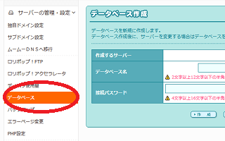
また、こちらは必須ではありませんが、無料の独自SSLも設定しておくとよいでしょう。
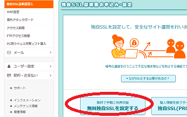
次に、上記のWordPress公式サイトからソフトをダウンロードしておきましょう。
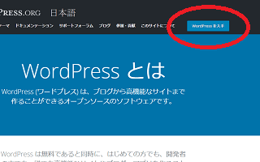
ダウンロードしたファイルを解凍し、フォルダの中身を以下のようにアップロードします。
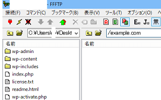
例えば、解凍した「wordpress-5.8-ja」のフォルダ内に、さらに「wordpress」のフォルダがあると思います。この「wordpress」フォルダを丸ごとではなく、中身の「wp-admin」などのフォルダやファイルをドメイン直下のルートディレクトリにアップロードしましょう。
もし、既存のホームページにブログを付属で追加するなどの場合、example.com/blogのように、「blog」などのフォルダを作成してそちらにアップロードすることもできます。
けれども、ドメインの直下にそのままアップロードするのが一般的と思います。
アップロードしましたら、ドメインのトップページへアクセスすると画面が表示されます。
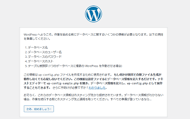
次のページで上記で設定したデータベースの情報を入力して完了です。
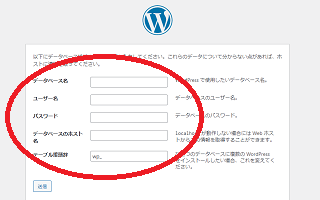
成功しました！と表示されたらログインします。
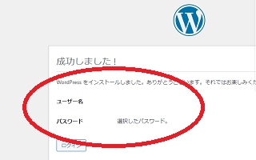
ダッシュボードが表示されましたら、インストールの完了です。
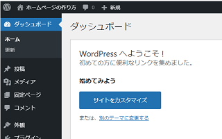
ほかのレンタルサーバーでも、上記の手順で手動でインストールできます。
ちなみに、こちらのロリポップの場合、WordPress簡単インストールの機能があります。
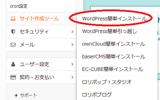
こちらで自動でインストールしてもらった方が簡単かもしれませんが、手動でインストールする場合でも特に難しいことはありません。
WordPressのおすすめ初期設定
WordPressをインストールしたのち、最初にパーマリンクの設定などをしておくとよいでしょう。
「ダッシュボード」 → 「設定」 → 「パーマリンク」の箇所に、パーマリンク設定がありますが、こちらで個別ページのURLの構造を設定することができます。
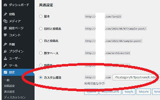
ただし、一般的なWordPressサイトの場合、「投稿名」を選択して以下のように「ドメイン名/投稿名」で設定するのがおすすめです。
https://example.com/sample-post/
もしくは、「カスタム構造」を選択し、以下のように「ドメイン名/カテゴリ名/投稿名」で設定するのもよいかと思います。
ちなみに、当ホームページの場合、このページのパーマリンクは以下のようになります。
https://www.homepage-tukurikata.com/hp/wordpress.html
そのため、もし当サイトがWordPressへ移行して更新する場合、「カスタム構造」を選択して以下のように「ドメイン名/カテゴリ名/投稿名.html」で設定する形になります。
https://www.homepage-tukurikata.com/%category%/%postname%.html
また、このパーマリンク設定の下に「カテゴリーベース」の箇所がありますが、こちらはカテゴリページのURL構造を設定するものです。
例えば、上記の場合、デフォルトでのカテゴリページは以下のように表示されるはずです。
「ドメイン名/category/カテゴリ名/」
そのため、当サイトの場合、このように表示されるかと思います。
https://www.homepage-tukurikata.com/category/hp/
このカテゴリベースの箇所に、「hoge」などと入力すると、この「category」が「hoge」に変わります。
「ドメイン名/hoge/カテゴリ名/」
当サイトではこの「category」は必要ないため、これを削除して表示するため、カテゴリベースの箇所にドット「.」を入力すれば、以下のようなカテゴリページになります。
https://www.homepage-tukurikata.com/hp/
ちなみに、このカテゴリ名については、「投稿」 → 「カテゴリー」の「スラッグ」箇所で「hp」などと入力すれば、設定できますので、カテゴリ名とスラッグについてはこちらで入力しておくとよいでしょう。
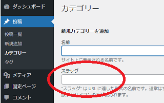
WordPressでの記事の投稿方法
実際にWordPressで記事を投稿する場合、当サイト運営者の場合は「コードエディター」を選択してHTMLで入力していますが、デフォルトの設定の方が簡単かと思います。
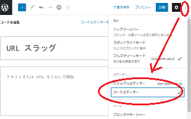
投稿する際、一旦、下書き保存をしてパーマリンクの箇所で「URLスラッグ」を設定しておけば、上記の投稿名のURLを設定することができます。
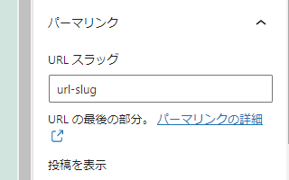
例えば、このページの場合、「URLスラッグ」の箇所に「wordpress」などと入力すれば、「wordpress.html」などの形で表示されることになります。
あとは投稿して表示を確認しましょう。
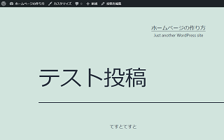
上部には「カスタマイズ」や「投稿を編集」などと表示されていますが、こちらはログインした状態でのみ表示されているため、自分以外の訪問者には表示されません。違うブラウザなどを立ち上げて、表示を確認してみることをおすすめします。